관광통역안내사-1교시 (2013-04-06 기출문제)
1과목: 한국사
1. 고인돌이 만들어지던 시대의 사회상에 관한 설명으로 옳지 않은 것은?
- 반달 돌칼을 이용하여 곡물의 이삭을 잘랐다.
- 철제 호미와 쟁기 등을 사용하여 농사를 지었다.
- 수장의 권위를 상징하는 청동검이 사용되었다.
- 민무늬토기, 붉은 간토기 등을 만들어 사용하였다.
(정답률: 90%)

2. 다음은 단군신화의 내용을 요약한 것이다. 선민(選民) 사상과 관련된 부분은?
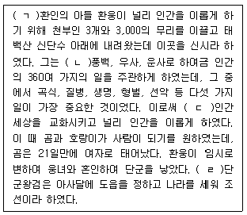
- ㄱ
- ㄴ
- ㄷ
- ㄹ
(정답률: 67%)
3. 우리나라에서 아슐리안형 주먹도끼가 출토된 곳은?
- 상원 검은모루유적
- 연천 전곡리유적
- 공주 석장리유적
- 웅기 굴포리유적
(정답률: 75%)
4. 우리나라 신석기시대 사람들의 생활상에 관한 설명으로 옳지 않은 것은?
- 다양한 종류의 간석기를 사용하였다.
- 나무열매, 물고기, 조개 등을 먹고 살았다.
- 농사를 짓지 못하여 떠돌아다니며 생활하였다.
- 대표적인 토기로는 빗살무늬토기가 사용되었다.
(정답률: 82%)
5. 우리나라의 한자ㆍ한문 수용에 관한 설명으로 옳지 않은 것은?
- 고구려의 이문진은 한문으로 유기라는 100권의 역사서를 편찬하였다.
- 임신서기석은 우리말 순서에 따라 한문을 기록하였다.
- 중국 양나라의 옥편, 문선, 천자문 등이 전래되어 한문 전파에 크게 기여하였다.
- 광개토대왕비와 사택지적비는 중국식 문장으로 작성되었다.
(정답률: 10%)
6. 다음 내용을 시대순으로 바르게 나열한 것은?
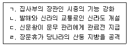
- ㄱ → ㄷ → ㄴ → ㄹ
- ㄱ → ㄷ → ㄹ → ㄴ
- ㄷ → ㄱ → ㄴ → ㄹ
- ㄷ → ㄱ → ㄹ → ㄴ
(정답률: 42%)
7. 다음 내용과 관련된 고려시대 기관은?
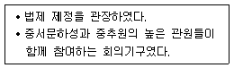
- 상서성
- 어사대
- 도병마사
- 식목도감
(정답률: 53%)
8. 우리나라의 문화가 일본에 전래된 순서대로 바르게 나열한 것은?
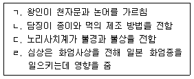
- ㄱ → ㄴ → ㄷ → ㄹ
- ㄱ → ㄷ → ㄴ → ㄹ
- ㄷ → ㄱ → ㄹ → ㄴ
- ㄷ → ㄴ → ㄹ → ㄱ
(정답률: 48%)
9. 삼한에 관한 설명으로 옳은 것은?
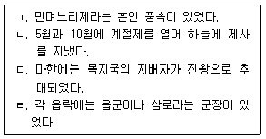
- ㄱ, ㄴ
- ㄱ, ㄷ
- ㄴ, ㄷ
- ㄴ, ㄹ
(정답률: 77%)
10. 다음을 시대순으로 바르게 나열한 것은?
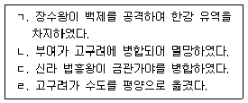
- ㄱ → ㄴ → ㄷ → ㄹ
- ㄴ → ㄷ → ㄹ → ㄱ
- ㄷ → ㄱ → ㄴ → ㄹ
- ㄹ → ㄱ → ㄴ → ㄷ
(정답률: 50%)
11. 신라가 삼국을 통일한 이후의 사회변화로 옳지 않은 것은?
- 유교교육을 강화하기 위해 국학을 설치하였으며, 지방통치조직으로 9주와 5소경을 두었다.
- 5부를 중국의 6전제도와 비슷하게 개혁하고, 관료전을 지급하였다.
- 신라의 신분제도인 골품제가 강화되고, 진골 귀족의 특권이 증대되었다.
- 중앙군을 9개의 서당으로, 지방군을 10개의 정으로 개편하였다.
(정답률: 48%)
12. 독도에 관한 설명으로 옳지 않은 것은?
- 일제는 1910년에 우리나라의 국권을 침탈하면서 독도를 자국의 영토로 편입시켰다.
- 숙종때 안용복은 울릉도와 독도에 출몰하는 왜인을 쫓아내고 우리 영토임을 확인하였다.
- 독도는 울릉도의 부속 섬으로 신라시대에 우리 영토로 편입되었다.
- 19세기에 조선 정부는 적극적인 울릉도 경영을 추진하고 독도까지 관할하였다.
(정답률: 74%)
13. 고려시대 광종의 업적으로 옳은 것을 모두 고른 것은?
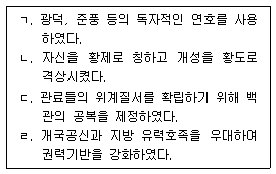
- ㄱ, ㄴ, ㄷ
- ㄱ, ㄹ
- ㄴ, ㄷ
- ㄴ, ㄷ, ㄹ
(정답률: 75%)
14. 고려시대 문헌공도에 관한 설명으로 옳은 것을 모두 고른 것은?
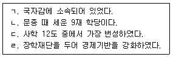
- ㄱ, ㄴ
- ㄱ, ㄹ
- ㄴ, ㄷ
- ㄷ, ㄹ
(정답률: 50%)
15. 일제강점기에 관한 설명으로 옳지 않은 것은?
- 총독부를 설치하고 총독을 군인으로 임명하여 무단지배를 추진하였다.
- 경찰 업무를 헌병이 담당하도록 하여 치안, 사법, 행정에 관여할 수 있도록 하였다.
- 영친왕을 강제로 일본으로 이주시키고, 친일적인 관료들에게는 작위를 내렸다.
- 일본식 교육을 확대하기 위하여 사립학교를 크게 늘렸다.
(정답률: 86%)
16. 다음 내용과 관련 있는 인물이 추진한 정책으로 옳지 않은 것은?
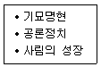
- 경연의 강화
- 삼정의 개혁
- 소학의 보급
- 방납폐단의 시정
(정답률: 40%)
17. 과전법에 관한 설명으로 옳지 않은 것은?
- 공신전은 세습할 수 있었다.
- 과전은 경기 지방의 토지로 지급하였다.
- 전세를 토지 1결당 미곡 4두로 고정시켰다.
- 죽거나 반역을 하면 국가에 반환하도록 정하였다.
(정답률: 70%)
18. 다음 사건을 시대순으로 바르게 나열한 것은?
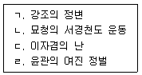
- ㄱ → ㄹ → ㄷ → ㄴ
- ㄴ → ㄷ → ㄹ → ㄱ
- ㄷ → ㄹ → ㄱ → ㄴ
- ㄹ → ㄱ → ㄴ → ㄷ
(정답률: 56%)
19. 조선시대 법률제도에 관한 설명으로 옳지 않은 것은?
- 노비에 관련된 문제는 의금부에서 처리하였다.
- 형벌에 관한 사항은 대부분 대명률의 적용을 받았다.
- 범죄 중에 가장 무겁게 취급된 것은 반역죄와 강상죄였다.
- 관찰사와 수령이 관할 구역 내의 사법권을 가졌다.
(정답률: 80%)
20. 일본의 조선 침탈 과정에 관한 설명으로 옳지 않은 것은?
- 청일전쟁 - 청나라의 조선에 대한 종주권을 부정하였다.
- 을미사변 - 청나라를 견제하고 반일세력을 제거하기 위하여 명성황후를 시해하였다.
- 갑오개혁 - 왕권을 축소시키고, 일본화폐의 유통을 허용하였다.
- 러일전쟁 - 한일의정서를 체결하고 조선의 토지를 군사적 목적으로 수용하였다.
(정답률: 38%)
21. 밑줄 친 기구가 설치된 시기의 모습으로 옳은 것은?
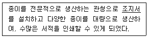
- 금속활자로 상정고금예문을 인쇄하였다.
- 교장도감을 설치하여 전적을 간행하였다.
- 밀랍 대신 식자판을 조립하는 방안을 창안하였다.
- 현존하는 세계 최고의 금속활자로 만든 책이 간행되었다.
(정답률: 63%)
22. 역사서에 관한 설명으로 옳지 않은 것은?
- 연려실기술 - 조선시대 역사와 문화를 정리 하였다.
- 택리지 - 자연 환경과 물산, 풍속, 인심 등을 서술하였다.
- 금석과안록 - 북한산비가 진흥왕 순수비임을 밝혔다.
- 동사강목 - 독자적 정통론으로 고려와 조선시대 역사를 체계화하였다.
(정답률: 41%)
23. 우리나라 의학서에 관한 설명으로 옳은 것을 모두 고른 것은?
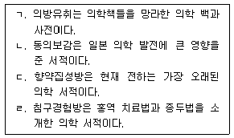
- ㄱ, ㄴ
- ㄱ, ㄹ
- ㄴ, ㄷ
- ㄷ, ㄹ
(정답률: 37%)
24. 밑줄 친 ㉠왕의 업적으로 옳은 것은?
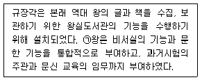
- 의정부와 삼군부의 기능을 회복하였다.
- 군역의 부담을 줄여주기 위해 균역법을 시행하였다.
- 왕조의 통치규범을 재정리하기 위해 속대전을 편찬하였다.
- 수령이 군현단위 향약을 주관하여 지방사림의 영향력을 줄였다.
(정답률: 50%)
25. 다음 설명하는 시기의 사회상으로 옳지 않은 것은?
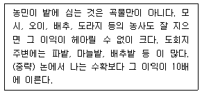
- 민간인에게 광산 채굴을 허용하고 세금을 징수하였다.
- 소작료를 내는 방식이 일정 비율에서 일정 액수로 내게 되었다.
- 포구를 거점으로 선상, 객주, 여각 등이 활발한 상행위를 하였다.
- 경제가 발달하여 건원중보, 삼한통보 등의 화폐가 널리 유통되었다.
(정답률: 75%)
2과목: 관광자원해설
26. 단청에 쓰이는 다섯 가지 기본색으로 옳은 것은?
- 청색, 자색, 황색, 회색, 남색
- 청색, 녹색, 흑색, 백색, 남색
- 청색, 적색, 흑색, 백색, 회색
- 청색, 적색, 황색, 백색, 흑색
(정답률: 70%)
27. 서원에 관한 설명으로 옳지 않은 것은?
- 조선 시대의 국립 교육기관이다.
- 조선 최초의 사액서원은 소수서원이다.
- 조선 최초의 서원은 백운동서원이다.
- 흥선대원군은 서원 철폐령을 내렸다.
(정답률: 84%)
28. 온돌의 구조와 관련이 없는 것은?
- 고래
- 그렝이
- 부넘이
- 개자리
(정답률: 56%)
29. 미래에 나타날 부처를 모신 건물로 일명 용화전이라고도 불리는 전각은?
- 미륵전
- 대웅전
- 관음전
- 팔상전
(정답률: 59%)
30. 다음 설명에 해당하는 석탑은?
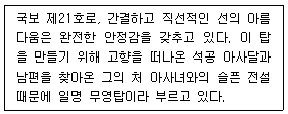
- 익산 미륵사지석탑
- 월정사 팔각구층석탑
- 경주 불국사 삼층석탑
- 부여 정림사지 오층석탑
(정답률: 70%)
31. 유네스코에 등재된 세계기록유산이 아닌 것은?
- 해인사 장경판전
- 승정원일기
- 일성록
- 동의보감
(정답률: 28%)
32. 고인돌의 유적지로 유네스코에 등재된 지역이 아닌 것은?
- 인천광역시 강화군
- 전라남도 화순군
- 전라북도 고창군
- 충청남도 부여군
(정답률: 58%)
33. 다음 설명에 해당하는 궁궐은?
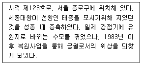
- 창덕궁
- 창경궁
- 덕수궁
- 경복궁
(정답률: 79%)
34. 불을 밝혀 놓고 밤샘하면서 설을 준비하는 대표적인 풍속은?
- 설빔
- 수세
- 세찬
- 세배
(정답률: 60%)
35. 강릉단오제의 행사내용으로 옳은 것은?
- 별신굿탈놀이
- 수영야류
- 관노가면극
- 남사당놀이
(정답률: 28%)
36. 궁중에서 나례나 장례 때 악귀를 쫓기위해 사용했던 것으로 네 개의 눈을 가진 탈은?
- 영노탈
- 주지탈
- 청계씨탈
- 방상시탈
(정답률: 62%)
37. 우리나라 전통무용의 일종인 민속무가 아닌 것은?
- 춘앵무
- 승무
- 살풀이춤
- 한량무
(정답률: 37%)
38. 판소리에 관한 설명으로 옳지 않은 것은?
- 고수의 장단에 맞추어 한 명의 소리꾼이 소리, 아니리, 너름새를 섞어 가며 구연(口演)한다.
- 지역적 특징에 따라 동편제, 서편제, 중고제로 구분된다.
- 춘향가, 심청가, 적벽가, 수심가, 흥보가는 판소리 다섯마당으로 정착되었다.
- 독창성과 우수성을 세계적으로 인정받아 유네스코 지정 인류무형유산으로 등재되었다.
(정답률: 40%)
39. 동굴의 생성원인이 용암굴에 해당되는 것을 모두 고른 것은?
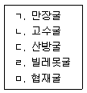
- ㄱ, ㄴ, ㄷ
- ㄱ, ㄴ, ㄹ
- ㄱ, ㄹ, ㅁ
- ㄷ, ㄹ, ㅁ
(정답률: 75%)
40. 모두 국립공원으로만 짝지어진 것은?(관련 규정 개정전 문제로 여기서는 기존 정답인 2번을 누르면 정답 처리됩니다. 자세한 내용은 해설을 참고하세요.)
- 지리산, 월악산, 태백산
- 월출산, 소백산, 무등산
- 대둔산, 가야산, 덕유산
- 주왕산, 칠갑산, 내장산
(정답률: 78%)
41. 관광특구로 지정된 온천이 아닌 것은?
- 부곡온천
- 수안보온천
- 백암온천
- 이천온천
(정답률: 83%)
42. 12km에 걸친 계곡의 경치가 매우 아름다워 명승 제1호로 지정되었으며, 율곡 이이 선생에 의해 그 명칭이 유래된 명승지는?
- 상선암
- 해금강
- 소금강
- 울산암
(정답률: 73%)
43. 천연보호구역을 모두 고른 것은?
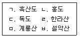
- ㄱ, ㄴ, ㄷ, ㄹ
- ㄱ, ㄴ, ㄷ, ㅁ
- ㄴ, ㄷ, ㄹ, ㅁ
- ㄴ, ㄷ, ㄹ, ㅂ
(정답률: 67%)
44. 중요민속자료로 지정된 민속마을이 아닌 것은?
- 경주양동마을
- 성읍민속마을
- 고성왕곡마을
- 전주한옥마을
(정답률: 63%)
45. 다음 설명에 해당하는 식물의 명칭과 천연기념물로 지정된 지역이 바르게 연결된 것은?
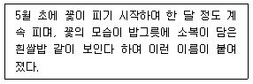
- 이팝나무 - 경남 김해
- 조팝나무 - 경남 김해
- 이팝나무 - 경기 수원
- 조팝나무 - 경기 수원
(정답률: 64%)
46. 예로부터 널리 알려진 향토특산물과 지역의 연결이 옳지 않은 것은?
- 고추 - 영양
- 모시 - 한산
- 목기 - 안성
- 삼베 - 안동
(정답률: 40%)
47. 지역과 향토주(鄕土酒)의 연결이 옳은 것은?
- 경주 - 교동법주
- 전주 - 문배주
- 대구 - 이강주
- 청도 - 홍주
(정답률: 73%)
48. 성벽 위에 설치하는 낮은 담장으로, 적으로 부터 몸을 보호하고 적을 효과적으로 공격하기 위한 구조물은?
- 옹성
- 여장
- 적대
- 해자
(정답률: 53%)
49. 지역과 축제의 연결이 옳지 않은 것은?
- 함평 - 나비축제
- 여주 - 청자문화제
- 진도 - 영등축제
- 문경 - 찻사발축제
(정답률: 66%)
50. 관광객이 해설사의 도움 없이 독자적으로 관 람대상을 추적하면서 제시된 안내문에 따라 그 내용을 이해하도록 고안된 해설기법은?
- 동행(walks) 해설기법
- 담화(talks) 해설기법
- 매체이용(gadgetry) 해설기법
- 길잡이시설(self-guiding) 해설기법
(정답률: 72%)